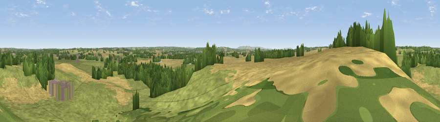

Viewpoint near Wasperton
#26579 in England · top 52% of its area beats it · near WaspertonThe view, rendered

A 360° render of this exact spot computed from the terrain model, tree cover and land cover — summer colours, afternoon light, calibrated against photographs of famous viewpoints. Real trees, hedges and buildings will differ in detail.
The panorama
Grey silhouette: terrain skyline in each direction (720 bearings, Earth curvature and refraction included). Dashed green: skyline with trees (+15 m) and buildings (+8 m) as obstacles. Blue strip: how far the ground is visible on each bearing.
Where the view opens
Wedge length = distance to the farthest visible ground on that bearing (vegetation-aware). Rings at 10, 25 and 50 km.
What fills the view
56% grassland · 28% cropland · 13% woodland · 2% built-up
Angular shares of the visible panorama (visual magnitude), not map area. Landscape diversity 0.45 (0–1 Shannon).
Key numbers
More beautiful places nearby
The staircase of upgrades: each row has a higher view potential than everything closer. Driving times are estimates from straight-line distance, calibrated against real road routing — check an actual route before setting out.
| Place | Direction | Drive | Score |
|---|---|---|---|
| Viewpoint near Tiddington | WSW · 5 km | ~11 min | 48.6 |
| Viewpoint near Tiddington | WSW · 5 km | ~11 min | 50.7 |
| Viewpoint near Ettington | S · 7 km | ~15 min | 60.1 |
| Lodge Hill | W · 15 km | ~26 min | 64.0 |
| Viewpoint near Northend | ESE · 16 km | ~28 min | 65.3 |
| Viewpoint near Meon Vale | SSW · 16 km | ~28 min | 77.0 |
| Broadway Hill | SSW · 27 km | ~43 min | 77.7 |
| Viewpoint near Elmley Castle | SW · 34 km | ~52 min | 80.5 |
52.22929, -1.62771 · source: screening · position refined by local search. Computed location — check access rights before visiting.